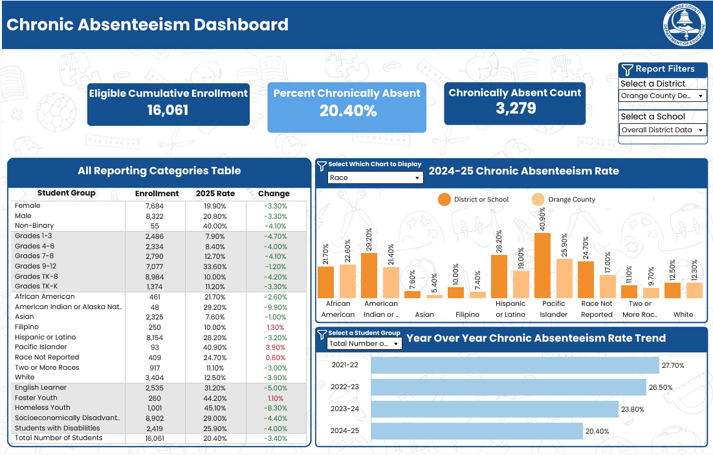

Welcome to the OCDE Data Hub
Your source for data and insights on student success. Explore dashboards, trends, and resources that support data-informed decisions.
422,351
Total Students
(2024-25 Orange County)
14.3%
Chronic Absenteeism
(2024-25 Orange County)
1.8%
Suspension Rate
(2024-25 Orange County)
55%
College/Career Prepared
(2024-25 Orange County)
93%
Graduation Rate
(2024-25 Orange County)
49.2%
Math Met/Exceeded
(2024-25 Orange County)
58.9%
ELA Met/Exceeded
(2024-25 Orange County)